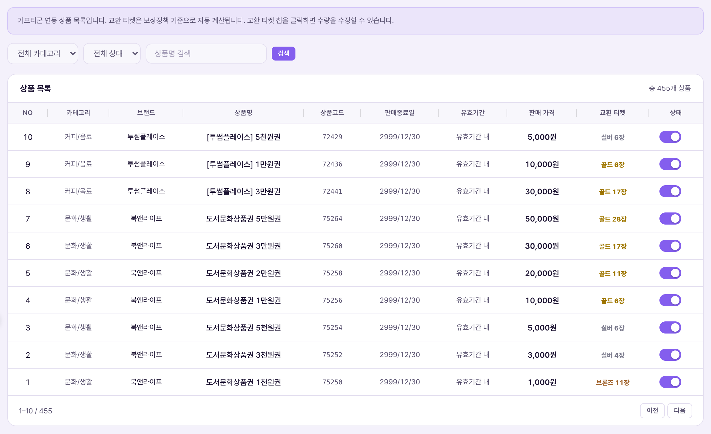
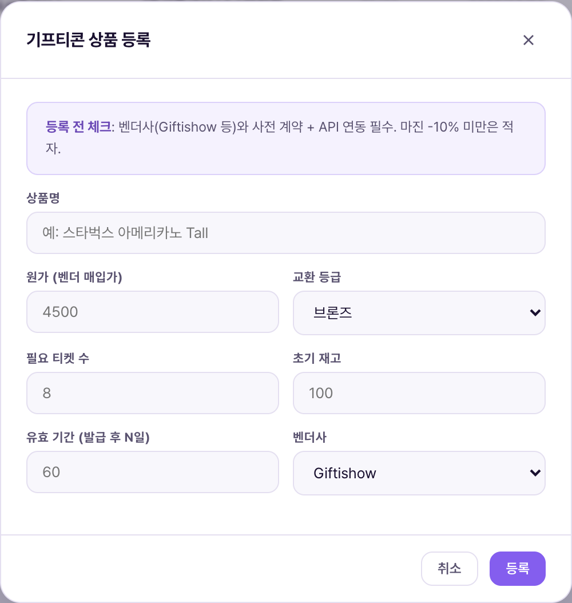

상품 목록은 회원이 앱의 "교환소"에서 티켓과 맞바꿀 수 있는 기프티콘 카탈로그를 관리자가 등록·수정하는 화면이다. 브랜드·상품명·필요 티켓 등급과 수량·유효기간을 상품 하나하나 개별 입력한다(여러 개를 한 번에 넣으려면 상품설명 일괄등록 사용).Danh sách sản phẩm là màn admin đăng ký·chỉnh sửa danh mục gifticon mà hội viên có thể đổi bằng vé tại "cửa hàng đổi thưởng" trong app. Nhập từng sản phẩm riêng lẻ — thương hiệu·tên sản phẩm·hạng và số vé cần·thời hạn hiệu lực (muốn nhập nhiều sản phẩm cùng lúc thì dùng Đăng ký hàng loạt mô tả sản phẩm).

| 요소Thành phần | 의미Ý nghĩa | 바꾸면 생기는 일Điều gì xảy ra khi thay đổi |
|---|---|---|
| 카테고리 필터Bộ lọc danh mục | 커피/음료·문화/생활·편의점·외식·쇼핑 5종5 loại: cà phê/đồ uống·văn hóa/đời sống·cửa hàng tiện lợi·ăn ngoài·mua sắm | 실제 데모 데이터의 표시 카테고리(카페·편의점·배달·분식)와 필터 옵션 명칭이 정확히 일치하지 않는다(예: "카페"↔"커피/음료"). 매핑값 차이로 보이며 확인이 필요하다.Tên hiển thị danh mục trong dữ liệu demo (cà phê·cửa hàng tiện lợi·giao đồ ăn·đồ ăn vặt) không khớp chính xác với tên trong bộ lọc (VD: "cà phê"↔"cà phê/đồ uống"). Có vẻ khác biệt do ánh xạ giá trị, cần được xác nhận. |
| 교환 티켓Vé đổi | 이 상품 1개를 받기 위해 필요한 티켓 등급·수량(칩 형태)Hạng·số lượng vé cần để nhận 1 sản phẩm này (dạng chip) | 배너 안내에 따르면 이 칩을 클릭하면 수량을 바로 수정할 수 있다 — 별도 모달 없이 인라인 편집으로 보인다.Theo banner hướng dẫn, bấm vào chip này có thể sửa số lượng ngay — có vẻ là chỉnh sửa inline không qua modal riêng. |
| 판매 가격Giá bán | 상품의 원화 액면가(정책서상 개념)Mệnh giá won của sản phẩm (khái niệm theo chính sách) | 데모 8개 상품 전부 "-"로 비어있다. 등록 모달에도 이 값을 입력하는 필드가 없어(3번 참조), 액면가를 어디서 관리하는지 확인이 필요하다.Cả 8 sản phẩm demo đều để trống "-". Modal đăng ký cũng không có ô nhập giá trị này (xem mục 3), cần xác nhận mệnh giá được quản lý ở đâu. |
| 상태Trạng thái | 판매중 / 품절 / 판매중지 3종3 loại: đang bán / hết hàng / ngừng bán | 판매중이 아닌 상태로 바꾸면 앱 교환소에서 교환이 불가 처리되는 것으로 보인다(노출 자체는 유지될 수도 있음).Đổi khác trạng thái đang bán có vẻ sẽ chặn đổi tại cửa hàng trong app (có thể vẫn hiển thị). |

| 입력 항목Mục nhập | 의미Ý nghĩa | 바꾸면 생기는 일Điều gì xảy ra khi thay đổi |
|---|---|---|
| 브랜드*Thương hiệu* | 제휴 브랜드명(예: 스타벅스)Tên thương hiệu đối tác (VD: Starbucks) | 필수 입력. 목록·검색·CSV 매핑의 기준값Bắt buộc nhập. Giá trị chuẩn cho danh sách·tìm kiếm·ánh xạ CSV |
| 상품명*Tên sản phẩm* | 회원에게 노출되는 상품 표시명Tên hiển thị cho hội viên | 필수 입력. 앱 교환소 카드에 그대로 노출(추정)Bắt buộc nhập. Hiển thị nguyên văn trên thẻ cửa hàng đổi thưởng trong app (suy đoán) |
| 이모지*Emoji* | 상품 아이콘 대용 이모지 직접 입력(예: ☕)Nhập trực tiếp emoji thay icon sản phẩm (VD: ☕) | 별도 이미지 업로드 없이 텍스트 이모지 하나로 아이콘을 대신함 — 실제 브랜드 로고 이미지는 이 화면에서 다루지 않는 것으로 보임Không upload ảnh riêng, dùng 1 emoji văn bản thay icon — có vẻ ảnh logo thương hiệu thực không được xử lý ở màn này |
| 카테고리Danh mục | 목록 화면 필터와 연결되는 분류Phân loại liên kết với bộ lọc màn danh sách | 드롭다운 선택식이라 목록 필터 옵션과 값이 다르면 그 상품은 필터로 못 찾을 수 있음(2번의 매핑 불일치 참고)Vì chọn qua dropdown, nếu giá trị khác với bộ lọc màn danh sách thì có thể không tìm thấy sản phẩm đó qua bộ lọc (xem mục 2 về sai khác ánh xạ) |
| 필요 등급* · 필요 수량*Hạng cần* · Số lượng cần* | 브론즈/실버/골드 중 등급 선택 + 몇 장 필요한지(기본 1)Chọn hạng đồng/bạc/vàng + cần bao nhiêu vé (mặc định 1) | 이 두 값의 조합이 사실상 "환율"이다. 수량을 낮추면 회원이 더 적은 티켓으로 교환 가능해지고, 저장 즉시 반영된다Tổ hợp 2 giá trị này chính là "tỷ giá" thực chất. Giảm số lượng thì hội viên đổi được với ít vé hơn, có hiệu lực ngay khi lưu |
| 유효기간(일)Thời hạn hiệu lực (ngày) | 교환 완료 후 사용 가능한 기한(기본값 90일)Hạn dùng sau khi đổi xong (mặc định 90 ngày) | 상품마다 다르게 설정 가능(데모 스타벅스 30일 vs 테스트상품 60일 사례로 확인) — 짧게 설정하면 회원이 못 쓰고 소멸될 위험 증가Có thể đặt khác nhau theo từng sản phẩm (đã xác nhận qua ví dụ Starbucks demo 30 ngày vs sản phẩm test 60 ngày) — đặt ngắn tăng rủi ro hội viên chưa dùng đã hết hạn |
| 상황Tình huống | 운영자가 하는 일Việc Vận hành viên làm | 결과Kết quả |
|---|---|---|
| 신규 브랜드 입점Thương hiệu mới lên kệ | [+상품 추가] → 브랜드·상품명·이모지·카테고리·필요등급/수량·유효기간 입력 → 등록[+Thêm sản phẩm] → nhập thương hiệu·tên·emoji·danh mục·hạng/số lượng cần·thời hạn → đăng ký | 저장 즉시 판매중 상태로 목록에 추가되는 것으로 보인다. 승인 절차 유무는 확인이 필요하다.Có vẻ thêm ngay vào danh sách với trạng thái đang bán khi lưu. Có quy trình duyệt hay không cần được xác nhận. |
| 일시 재고 소진Tạm hết hàng | 해당 상품 상태를 "품절"로 전환Chuyển trạng thái sản phẩm đó sang "hết hàng" | 목록 노출은 유지하되 교환은 막는 것으로 추정 — 재입고 시 "판매중"으로 되돌림Suy đoán vẫn hiển thị nhưng chặn đổi — khi có hàng lại thì chuyển về "đang bán" |